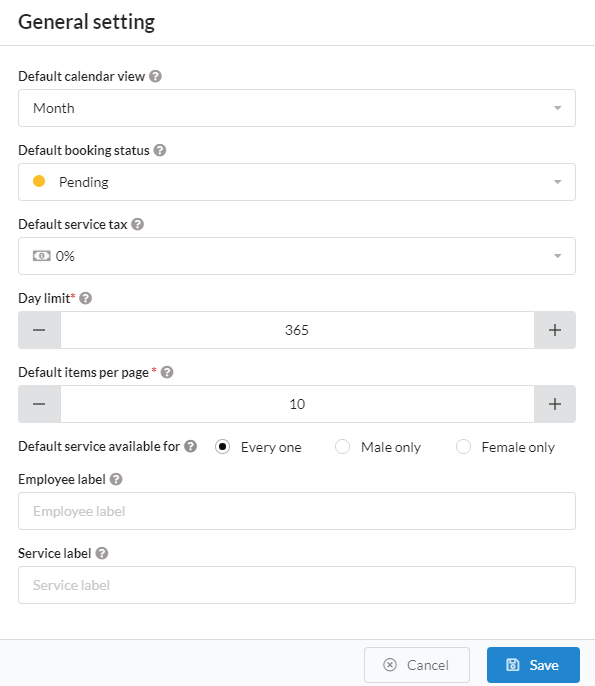

FAT Services Booking Documentation
visit roninwp.comGeneral Setting
This section will gives you explanation on how to create event tag
- Log into your WordPress admin panel.
- Navigate to FAT Services Booking » Settings.


- 1. Default calendar view : In calendar feature, it have four views to display booking. This is setting allow you to choose a default view for calendar
- 2. Default booking status : Enable to choose default booking status when add new booking.
- 3. Default service tax : Set up default value for Tax field in new service form.
- 4. Day limit : In the booking form, clients can be select date to booking a service. In some case, you don't want clients can be book a month, a year in future .. This feature allow you can setting how far in the future the clients can book.
- 5. Default items per page : Use to set up paging for list.
- 6. Default service available for : Set up default value for Service available field in new service form.
- 7. Employee label : This is label what show up in booking form at frontend. Ex: In some case, you want change to trainer
- 8. Service label : This is label what show up in booking form at frontend.